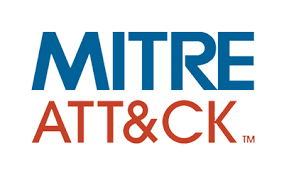

During my internship at Steve Madden, I worked on several enterprise IT projects focused on automation, user management, and infrastructure.
I helped assign emergency 911 addresses to Teams users across retail stores using PowerShell to automate bulk updates in Microsoft Teams Admin Center.
I also assisted in the company-wide migration from Duo to Microsoft Authenticator, using Microsoft Azure to manage user transitions and creating user documentation and communications.
Additionally, I set up a Windows Server for automated Windows 11 deployments via PXE boot using Microsoft Deployment Toolkit (MDT) and Windows Deployment Services (WDS), including scripting driver extraction and configuring DHCP/DNS.
This experience strengthened my skills in PowerShell, Azure, MDT, WDS, and enterprise IT operations.
Interns were tasked of picking a company that Steve Madden could acquire and create a pitch for a company.
Our group chose the shoe brand called K-Swiss. The website is a rebranded mockup of the current existing K-Swiss website
Best Buy Geek Squad Agent
During my internship at Steve Madden, I worked on several enterprise IT projects focused on automation, user management, and infrastructure.
I helped assign emergency 911 addresses to Teams users across retail stores using PowerShell to automate bulk updates in Microsoft Teams Admin Center.
I also assisted in the company-wide migration from Duo to Microsoft Authenticator, using Microsoft Azure to manage user transitions and creating user documentation and communications.
Additionally, I set up a Windows Server for automated Windows 11 deployments via PXE boot using Microsoft Deployment Toolkit (MDT) and Windows Deployment Services (WDS), including scripting driver extraction and configuring DHCP/DNS.
This experience strengthened my skills in PowerShell, Azure, MDT, WDS, and enterprise IT operations.
Interns were tasked of picking a company that Steve Madden could acquire and create a pitch for a company.
Our group chose the shoe brand called K-Swiss. The website is a rebranded mockup of the current existing K-Swiss website
Projects
MITRE - Marist Threat Based vulnerability Prioritization Through Prompt Engineering

Researched threat-based vulnerability prioritization using AI and prompt engineering to improve how security teams assess and respond to cyber threats.
Currently desinging an automated tool that maps vulnerabilities
(CVEs) to attack techniques (TTPs) using MITRE ATT&CK,
helping organizations prioritize real threats more effectively.
Cybersecurity Virtual Home Lab
Created a home lab using linux virtual machines.
Goal was to be able to simulate an attack between different virtual enviroments, as well as implemente a defense method to block an attack.
This was accomplished by using Kali to exploit port a vulnreble port on metasploitable2.
Using pfSense, we were able to force traffic that was destined for metasploitable2 to pass through it and block any traffic sent through the specific port.
TryHackMe Modules
Modules completed through TryHackMe meant to educate and improve skills relating to cybersecurity.
Completed modules: Cyber Defense Frameworks, Cryptography, Compromising Advanced Directory, Endpoint Security Monitoring
MDWebsite
MDWebsite is a website designed to advertise myself (Max Debin) and demonstrate by web development abilities.
This project was inspired by multiple friends who have all created and recomended creating a personal website.
This project was created with HTML, CSS There are two versions of the website. A static website and a dynamic one
using flask conected to a postgres database. The four main pages are an about me page, projects and experiences,
my resume, as well as a contact me page where when the user fills out the information,
an email will be sent to me containing the contents of the message.